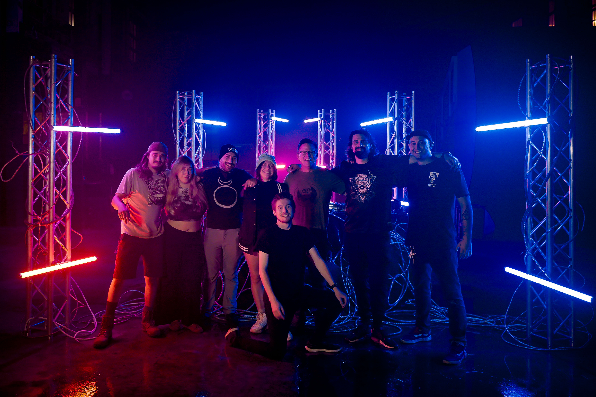
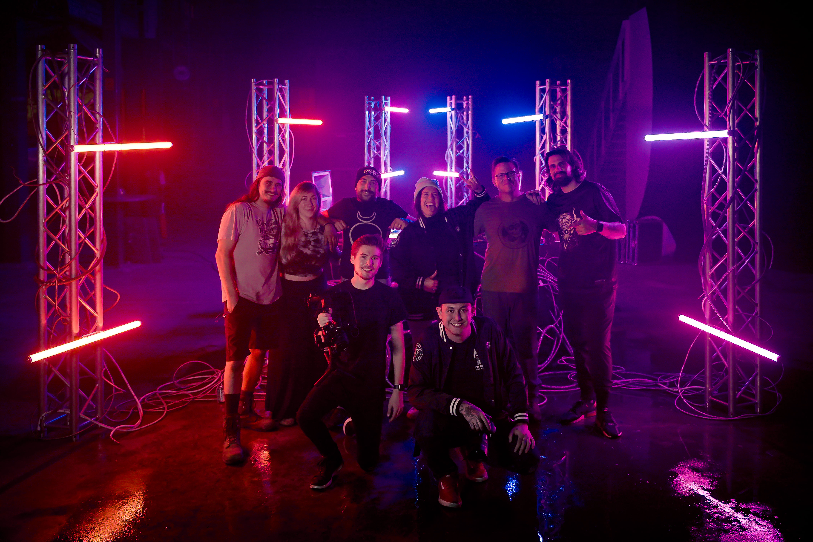

Filmmaker located just north of Seattle
Music Videos · Dance Videos · Live Events · Brand & Business Promotion
Hello, I'm Zach.
I'm a filmmaker based just north of Seattle, specializing in music videos, wedding films, dance & live performance videos, and promotional content for brands and businesses.
I hold a degree in Digital Audio Engineering and spent years as a guitarist in an instrumental progressive metal band. By day, I lead a team at Apple, where I've proudly worked for over a decade.
I strive to create impactful visual content that helps artists and brands share their stories with the world.
Take a look at my portfolio above, and feel free to reach out below — let's bring your vision to life.
IG: @zachp34

